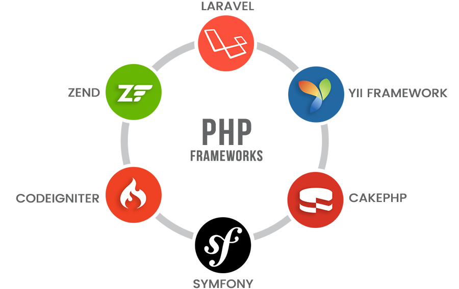
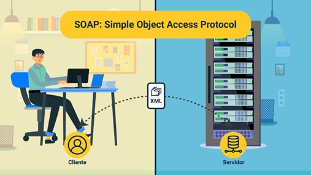
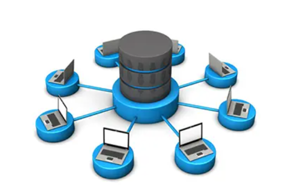

Semana 6
Frameworks
Un framework es un esquema o marco de trabajo que ofrece una estructura base para elaborar un proyecto con objetivos específicos, una especie de plantilla que sirve como punto de partida para la organización y desarrollo de software.
Generalmente, los frameworks son usados por programadores porque permiten acelerar el trabajo y favorecer que este sea colaborativo, reducir errores y obtener un resultado de más calidad.
¿Para qué sirve un framework?
Un framework sirve para acometer un proyecto en menos tiempo, y en el sector de la programación, con un código más limpio y consistente, de manera rápida y eficaz. El framework ofrece una estructura base que los programadores pueden complementar o modificar según sus objetivos.
Como hemos indicado, usar frameworks les permite esa agilización y automatización de procesos, pero, llegados a este punto, no podemos dejar de lado otro tipo de ventajas:
Semana 7
Gestores De Dependencia
En un proyecto web complejo tal vez sean necesarias diversas herramientas como frameworks, plugin, librerías y otros recursos. El número de recursos que puedes necesitar puede ir creciendo dependiendo del tipo de proyecto que estés desarrollando.
Ya que estar pendiente de todos estos recursos, en particular cuando ya se trata de un gran número de ellos, puede ser complicado deberás utilizar un gestor de dependencias. Estos gestores permiten instalar, organizar y mantener actualizadas todas las dependencias del proyecto, de modo que sólo debes ejecutar un comando y el gestor de dependencias realizará las verificaciones necesarias por ti.
A continuación, te mencionamos algunos gestores de dependencias que te pueden ser de utilidad en tus proyectos.
CocoaPods es un gestor de dependencias para aplicaciones desarrolladas en Swift y Objective-C. Posee más de 24 mil librerías y puede ser de utilidad para proyectos de cualquier escala.
Puedes especificar las dependencias para tu proyecto en un archivo de texto, CocoaPods soluciona las dependencias entre librerías, recoge el código fuente para todas las dependencias y mantiene un espacio de trabajo en el que puedes crear tu proyecto.
RubyGems aloja todos los paquetes para Ruby. A estos paquetes se les llama “gemas” Con RubyGems buscar e instalar gemas creadas por otros desarrolladores, además mediante la API puedes publicar tus propias gemas y colaborar con la comunidad de Ruby. De hecho, uno de los principales objetivos de RubyGems es incentivar a los desarrolladores a colaborar y de esta manera hacer crecer la comunidad.

Composer es un gestor de dependencias para PHP que crea un archivo llamado composer.json en la raíz del proyecto que, al ejecutar un solo comando, descarga automáticamente todas las dependencias que necesita tu proyecto.
Cabe destacar que Composer funciona por proyecto y no de manera global. Es decir, descarga las dependencias necesarias por cada proyecto que realices en PHP, aunque es compatible con comando globales, así que puedes usarlo para instalar ciertas dependencias de forma global.
NuGet es el gestor de paquetes para la plataforma .NET. Puedes usar NuGet para crear y utilizar paquetes en tus proyectos. En la actualidad alberga más de 700 mil paquetes, así que es bastante probable que encuentres sistemas de utilidad para tus proyectos.
Al utilizar NuGet para instalar paquetes, el programa copiará los archivos de la librería en la carpeta de proyecto y lo actualizará automáticamente. Al eliminar un paquete, NuGet revierte cualquier cambio que se haya realizado, de modo que tu proyecto queda tal y como estaba antes de instalar dicho paquete.
Pip es el gestor de dependencias utilizado para Python. De hecho, viene incluido en versiones de Python 2.7.9 o mayores; así como en Python 3.4 o mayores, de tal manera que ni siquiera necesitas instalarlo si estás utilizando alguna de estas versiones de Python, aunque es posible que debas actualizar Pip antes de empezar a utilizarlo.
En conclusión…
Los gestores de dependencias o paquetes se han convertido en una herramienta indispensable al desarrollar aplicaciones e incluso webs, en especial si se trata de proyectos complejos y a gran escala. Puedes usar cualquier de ellos dependiendo del tipo de lenguaje que estés utilizando para tu proyecto, algunos se centran en un solo lenguaje, por otro lado, otros son más globales y te pueden ser de ayuda en otro tipo de proyectos de desarrollo.
Semana 8
SOAP - REST
SOAP
(Simple Object Access Protocol) Es un protocolo ligero para el intercambio de información en entornos descentralizados y distribuidos. Los mensajes SOAP son las transmisiones de información de remitentes a destinatarios. Los mensajes SOAP se pueden combinar para crear patrones de petición/respuesta. También es independiente del transporte, pero habitualmente se lleva a través de HTTP para ejecutarse con la infraestructura de Internet existente. Soap es esencial para los servicios web, interfaces a través de las cuales un dispositivo puede hacer uso del servicio de un servidor. Los buscadores, las tiendas en línea y otros muchos servicios en Internet funcionan a través de dichos servicios web, y SOAP es uno de los protocolos que lo hacen posible.
Este protocolo esta basado en XML y se componen en tres partes:
3 características principales de SOAP
REST
Es una interfaz para conectar varios sistemas basados en el protocolo HTTP (uno de los protocolos más antiguos) y nos sirve para obtener y generar datos y operaciones, devolviendo esos datos en formatos muy específicos, como XML y JSON. REST se apoya en HTTP, los verbos que utiliza son exactamente los mismos, con ellos se puede hacer GET, POST, PUT y DELETE. De aquí surge una alternativa a SOAP. REST llega a solucionar esa complejidad que añadía SOAP, haciendo mucho más fácil el desarrollo de una API REST, en este caso de un servicio en el cual nosotros vamos a almacenar nuestra lógica de negocio y vamos a servir los datos con una serie de recursos URL y una serie de datos que nosotros los limitaremos, es decir, será nuestro BACKEND nuestra lógica pura de negocios que nosotros vamos a utilizar.
API REST: Es una interfaz de programación de aplicaciones (API o API web) que se ajusta a los límites de la arquitectura REST y permite la interacción con los servicios web de RESTful. El informático Roy Fielding es el creador de la transferencia de estado representacional (REST). Las API son conjuntos de definiciones y protocolos que se utilizan para diseñar e integrar el software de las aplicaciones. En otras palabras, las API le permiten interactuar con una computadora o un sistema para obtener datos o ejecutar una función, de manera que el sistema comprenda la solicitud y la cumpla.
3 características de REST
3 ventajas de REST
2 desventajas de REST
Diferencias entre SOAP y REST
Es posible que muchos sistemas heredados sigan rigiéndose por SOAP, aunque REST haya surgido más tarde y se considere una alternativa más rápida en los escenarios basados en la Web.
| SOAP | REST |
|---|---|
| SOAP es un protocolo con requisitos específicos, como en el caso de la mensajería XML. | REST es un conjunto de pautas que ofrece una implementación flexible. |
| SOAP es un sucesor de XML-RPC y es muy similar, pero describe una forma estándar de comunicación. | No se requiere de ninguna herramienta costosa para interactuar con el servicio web. Incluso en lenguajes de programación antiguos se puede hacer la comunicación a través de un HTTP. |
| Varios lenguajes de programación tienen soporte nativo para SOAP, normalmente necesita de una URL de servicio web y puede llamar a sus funciones de web service sin la necesidad de un código específico. | Eficiente (SOAP usa XML para todos los mensajes, REST puede usar formatos de mensajes más pequeños como son texto plano, HTML, XML, JSON etc.). |
| WSDL define el esquema entre el cliente y el servicio y es estático por su naturaleza. | REST tiene mejor rendimiento y escalabilidad. Las lecturas REST se pueden almacenar en caché; Las lecturas basadas en SOAP no se pueden almacenar en caché. |
Las API de REST son ligeras, así que son ideales para los contextos más nuevos, como el Internet de las cosas (IoT), el desarrollo de aplicaciones móviles y la informática sin servidor. Los servicios web de SOAP ofrecen seguridad y cumplimiento de las operaciones integrados que coinciden con muchas de las necesidades empresariales, pero que también los hacen más pesados.
Semana 9
Motores de bases de datos
Es el servicio principal para almacenar, procesar y proteger los datos. El Motor de base de datos proporciona acceso controlado y procesamiento de transacciones rápido para cumplir con los requisitos de las aplicaciones consumidoras de datos más exigentes de su empresa. Use Motor de base de datos para crear bases de datos relacionales para el procesamiento de transacciones en línea o datos de procesamiento analíticos en línea. Se pueden crear tablas para almacenar datos y objetos de base de datos como índices, vistas y procedimientos almacenados para ver, administrar y proteger los datos.
Teniendo en cuenta la gran cantidad de información que se almacena en una Base de Datos y que cada vez son más las aplicaciones y personas que requieren de su uso, los Motores de Bases de Datos, nacen como alternativa para optimizar el procedimiento de acceso, consulta y extracción o inyección de información de las Bases de Datos, creando así un entorno más sencillo, agradable y eficaz a la hora de Utilizarlas.
Los Motores de Bases de Datos debe cumplir con los siguientes parámetros:
Abstracción de la información, Independencia, Redundancia mínima, Consistencia, Seguridad Integridad, Respaldo y recuperación, Control de la concurrencia, Tiempo corto de respuesta.
Principales motores de bases de datos
El lenguaje de las bases de datos: SQL
el SQL, Structured Query Language o lenguaje de consulta estructurada. Básicamente, se trata de un lenguaje ideado para gestionar y recuperar información en gestores de bases de datos (relacionales). Para ello, hace uso del cálculo relacional y del álgebra. Gracias a ello permite la inserción de datos en los gestores, la realización de actualizaciones, consultas, o modificaciones, así como borrado de datos o controlar el acceso a la información.
En base a ello, la compañía IBM desarrollo el lenguaje SEQUEL, el cual fue posteriormente ampliado y mejorado para ser usado por el gestor de bases de datos System R, en 1977. Este lenguaje, SEQUEL, fue evolucionado y perfeccionado para dar lugar a lo que hoy conocemos por lenguaje SQL. En los años 80, pasa a ser el lenguaje usado por la mayoría de bases de datos relacionales, hasta que en el año 1986 es finalmente reconocido y estandarizado por el ANSI (Instituto Nacional Estadounidense de Estándares).